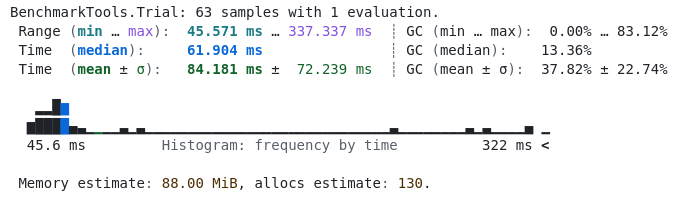
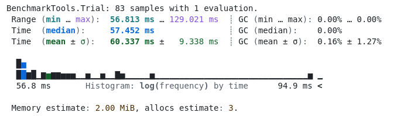
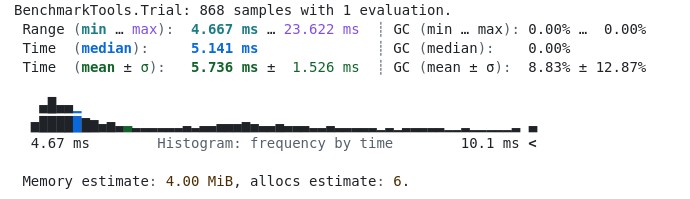
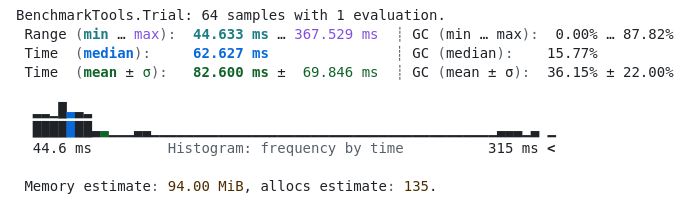
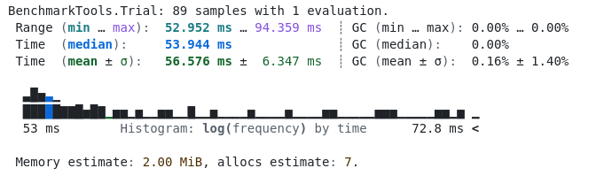
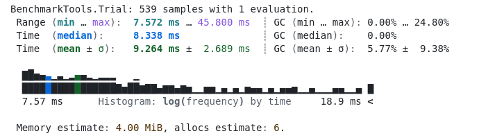
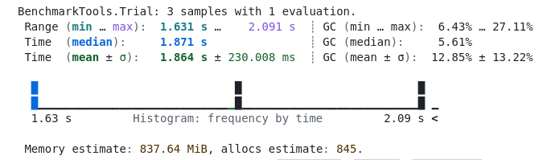
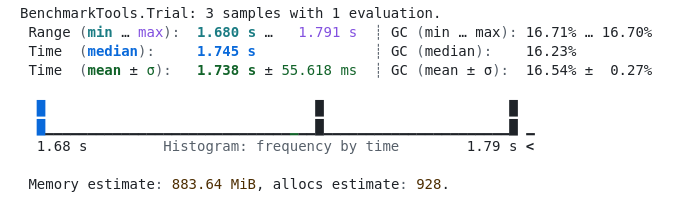

Benchmark
Nesta seção, apresentamos os testes de desempenho realizados para avaliar a eficiência de diferentes implementações de funções e resolução de sistemas lineares. Os testes foram divididos em funções seriais (execução tradicional sem paralelização) e funções vetorizadas (uso de operações vetorizadas para maior eficiência).
Teste Independente de Funções: Seriais
Os benchmarks abaixo representam os resultados da execução das funções na forma serial. Nesse contexto, as funções são implementadas de maneira tradicional, sem uso de técnicas avançadas de vetorizações ou paralelismo.
Benchmark K_serial
Este teste avalia o desempenho da função K na implementação serial.

Benchmark F_serial
Neste teste, analisamos o comportamento da função F na forma serial.

Benchmark G_serial
O gráfico a seguir demonstra o desempenho da função G quando executada serialmente.

Teste Independente de Funções: Vetorizados
Nesta subseção, apresentamos os resultados dos benchmarks para as funções vetorizadas. A vetorização permite um processamento mais eficiente ao operar sobre blocos de dados simultaneamente, reduzindo a necessidade de loops explícitos.
Benchmark K_vectorized
O teste de desempenho da função K na implementação vetorizada é mostrado abaixo.

Benchmark F_vectorized
Abaixo, avaliamos o desempenho da função F em sua forma vetorizada.

Benchmark G_vectorized
Aqui, apresentamos o resultado do benchmark para a função G com implementação vetorizada.

Teste do Sistema Linear
Para resolver o sistema linear, realizamos benchmarks comparando duas abordagens: laço explícito (serial) e vetorizada. O objetivo é analisar a diferença de desempenho ao utilizar técnicas de vetorizações para otimização.
Laço Explícito
Neste teste, utilizamos a abordagem tradicional com laços explícitos para resolver o sistema linear.

Vetorizado
Nesta abordagem, utilizamos técnicas de vetorizações para resolver o sistema linear de forma otimizada.
